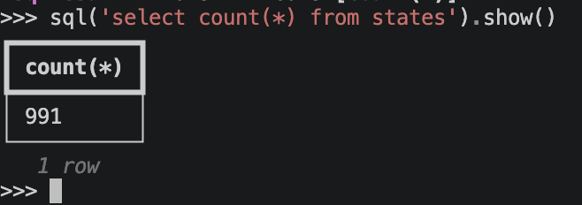

SQL Access¶
Home Assistant has an internal SQL database front-ended by the Recorder integration. It holds, history, activity, long term statistics and more. Underneath it can by Sqlite (most common), MariaDB, MySQL or PostgreSQL.
When in live mode, the ha-repl exposes an sql variable, which allows access to this database, via the Recorder interface.
sql and its results are local objects. A query is sent to Home Assistant, the rows come back as one download, and everything after that - show(), slicing, dataframes, CSV export - works on that local copy, with whatever libraries you have installed locally. Nothing extra needs installing in Home Assistant.
Info
Data is serialized as Apache Arrow using the nanofeather library - this provides column-oriented data for good compression, zero-copy reuse into dataframes and good compatibility with popular data libraries like polars and pandas.
sql Object¶
| Operation | Description |
|---|---|
sql("<query>") |
Send a query to the database and wait for results |
sql("<query>", legacy=True) |
The same, with legacy columns in view |
sql.max_rows |
Read/write property to set the default row limit for results in this session |
sql.table("<name>") |
Returns the Table object that describes the named table and its contents, or raises KeyError if there is no such table |
sql.table("<name>", legacy=True) |
The same, with the table's legacy columns included |
sql.tables |
Returns a list of Table objects that describe each table and its contents |
For example this will show the size of the statistics table.

Result Objects¶
On the result object, show() will display data in tabular form at the command, using the rich library's table support.
The result will have its rows automatically limited, so it doesn't lock up the console - use max_rows to override this. The columns shown are the same ones a row of the result has, so show() and [0] always agree; use max_cols to cap how many, or columns to set the list of columns specifically.
A single row can be picked out by position, so [0] for the first row or [-1] for the last - see Row Objects. The results can also be sliced like a Python list, so [:10] for the first 10 rows or [-10:] for the last 10. Slices share the downloaded data rather than copying it. For anything more advanced - a step, filtering, sorting, joins - turn the result into a dataframe with to_polars(), which also uses the downloaded Arrow data directly. You can also call len() on the results to get the number of rows.
| Operation. | Description |
|---|---|
rowcount |
Size of result set, may not be size of table due to row limits |
truncated |
True if results were truncated due to row limits |
legacy |
Read/write flag, set to True to bring legacy columns into view |
table |
The Table object describing this table, or None if the columns don't identify a single table |
column_names |
List of the column names in the table, in order |
show() |
Dump the table data to the console |
project() |
Create a new result object with a limited set of columns based on this one |
sample() |
Randomly sample selected quantity of rows out of the result set |
export_csv() |
Write the results to a local CSV file, by default named after the table (result.csv if there isn't one) |
arrow() |
The result as an Arrow array, for Arrow-aware libraries, e.g. polars.DataFrame(r.arrow()) or pyarrow.table(r.arrow()) |
arrow_ipc() |
The result as Arrow IPC stream bytes, e.g. to save to a file |
to_json() |
The results as a JSON string of columns, rows, rowcount and truncated |
to_dicts() |
Extract a list of dict objects from the results |
to_pandas() |
Turn the results into a pandas dataframe, if pandas installed |
to_polars() |
Turn the results into a polars dataframe, if polars installed |
Row Objects¶
Indexing a result with a row number gives a Row object. It reads like a list of the row's values, in column order, and can also be indexed by column name.
| Operation | Description |
|---|---|
values |
List of the values in the row, in column order |
column_names |
List of the column names, in the same order |
table |
The Table object of the result the row came from, or None if it had none |
to_dict() |
The row as a dict of column name to value |
>>> sql("select count(*) from events")[0][0]
>>> row = sql("select * from states_meta")[0]
>>> row["entity_id"]
>>> {col: sql(f"select count(distinct {col}) from events")[0][0] for col in sql.table("events").column_names}
Table Objects¶
A Table object describes one table, using Home Assistant's own definition of it in homeassistant.components.recorder.db_schema.
| Operation | Description |
|---|---|
name |
The table's name in the database, e.g. states |
class_name |
The name of the class the Recorder uses for this table, e.g. States, to look up in db_schema |
description |
That class's docstring, e.g. State change history. |
columns |
List of Column objects, each with a name, type and legacy flag |
column_names |
List of the column names, in order |
Both leave out the legacy columns, unless the table came from sql.table("<name>", legacy=True).
Legacy Columns¶
Some Recorder tables still have columns that Home Assistant no longer writes to, because the data moved elsewhere - entity_id in states, for example, is now in states_meta. Home Assistant marks these in db_schema as UNUSED_LEGACY_COLUMN, and they are empty for anything recorded recently.
They are kept out of view by default, both in a Table and in a query's result. A query still downloads them, but the result leaves them out of everything it does - show(), rows, column_names, dataframes, exports - so select * from states shows only the columns in use.
A legacy column is in view when:
- the query names it
- the query is made with
legacy=True legacyis set toTrueon the result afterwards, which needs no new query
>>> r = sql("select * from states") # columns in use
>>> r.legacy = True # now every column
>>> sql("select * from states", legacy=True) # every column from the start
>>> sql("select state_id, entity_id from states") # named, so in view
>>> sql.table("states").column_names # columns in use
>>> sql.table("states", legacy=True).column_names # every column
A query is checked by its words rather than parsed, so a legacy column mentioned anywhere in it, such as in a where, is in view.
More Help¶
Use help(sql), or call help(..) on a result, row or table object, to get reminded of the API. It gives a short summary of the methods, properties and attributes; add full=True for Python's own full help page.